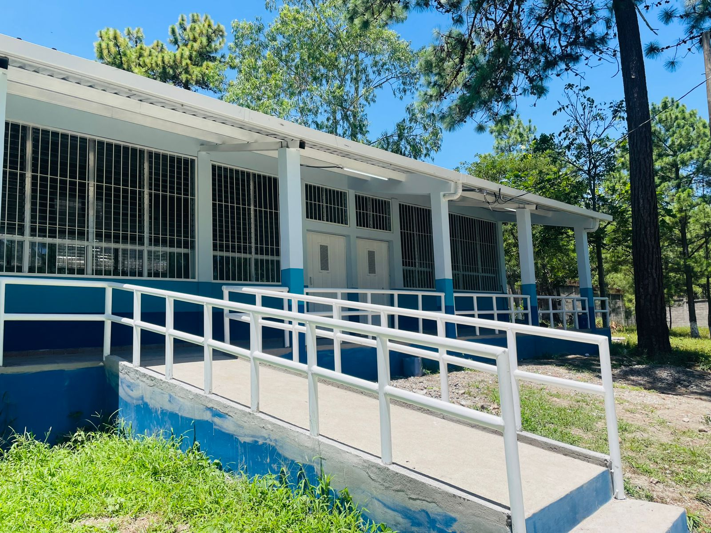

hubo actividad educativa previa (posiblemente desde ~1980 según algunas fuentes), pero la formalización institucional del Instituto Técnico “Francisco Miranda” parece documentarse oficialmente mediante el Acuerdo 7245 EP-87 del 30 de octubre de 1987.

El Instituto Técnico “Francisco Miranda” , con una larga y brillante trayectoria de ejecuciones en pro de la juventud hondureña, a través de mas de 20 años de existencia constituye el principal establecimiento de educación media en la comunidad de Zambrano. Nace a la vida institucional, a través del acuerdo 7245 EP-87 del 30 de Octubre de 1987; Inicio como Institución privado y a partir de 1995 es de carácter oficial. Fueron sus fundadores: Don German Martínez, Don Felicito Vargas, PM Ramón Alexis Hernández, Profa.: Elba Marina Urraco, Doña Elena Maradiaga y la Profa. Hilda Miranda; teniendo como cercanos colaboradores a Doña Azucena Vda. De Romero y Don Ramón Flores.

El crecimiento institucional del Instituto Técnico Francisco Miranda es un proceso integral que abarca la ampliación de la cobertura estudiantil, el fortalecimiento de su infraestructura con nuevas aulas, talleres y laboratorios, la mejora de la calidad académica mediante la capacitación docente y la incorporación de metodologías modernas, así como la diversificación de la oferta educativa con especialidades técnicas y programas complementarios. A ello se suma la obtención de reconocimientos oficiales, la consolidación de vínculos con la comunidad y el sector productivo, y el fortalecimiento de su gestión administrativa, todo lo cual ha permitido a la institución evolucionar y responder mejor a las necesidades formativas de su entorno.

Actualmente, el Instituto Técnico Francisco Miranda, ubicado en la aldea Zambrano, Francisco Morazán, continúa brindando formación a jóvenes de la comunidad, aunque enfrenta limitaciones de infraestructura y mobiliario. En 2023 recibió una donación de 100 pupitres por parte de la Alcaldía Municipal del Distrito Central, respuesta a la necesidad urgente de mejorar las condiciones en que los estudiantes recibían clases. Este hecho refleja que el colegio sigue activo, comprometido con la educación técnica, pero también que mantiene desafíos en cuanto a recursos y equipamiento para atender adecuadamente a su población estudiantil.
hubo actividad educativa previa (posiblemente desde ~1980 según algunas fuentes), pero la formalización institucional del Instituto Técnico “Francisco Miranda” parece documentarse oficialmente mediante el Acuerdo 7245 EP-87 del 30 de octubre de 1987.
El Instituto Técnico “Francisco Miranda” , con una larga y brillante trayectoria de ejecuciones en pro de la juventud hondureña, a través de mas de 20 años de existencia constituye el principal establecimiento de educación media en la comunidad de Zambrano. Nace a la vida institucional, a través del acuerdo 7245 EP-87 del 30 de Octubre de 1987; Inicio como Institución privado y a partir de 1995 es de carácter oficial. Fueron sus fundadores: Don German Martínez, Don Felicito Vargas, PM Ramón Alexis Hernández, Profa.: Elba Marina Urraco, Doña Elena Maradiaga y la Profa. Hilda Miranda; teniendo como cercanos colaboradores a Doña Azucena Vda. De Romero y Don Ramón Flores.
El crecimiento institucional del Instituto Técnico Francisco Miranda es un proceso integral que abarca la ampliación de la cobertura estudiantil, el fortalecimiento de su infraestructura con nuevas aulas, talleres y laboratorios, la mejora de la calidad académica mediante la capacitación docente y la incorporación de metodologías modernas, así como la diversificación de la oferta educativa con especialidades técnicas y programas complementarios. A ello se suma la obtención de reconocimientos oficiales, la consolidación de vínculos con la comunidad y el sector productivo, y el fortalecimiento de su gestión administrativa, todo lo cual ha permitido a la institución evolucionar y responder mejor a las necesidades formativas de su entorno.

Los jóvenes del bachillerato en Agroindustria del Instituto Técnico Francisco Miranda han iniciado su etapa de pasantía profesional en distintas áreas agrícolas de la región.

Jóvenes de último de bachillerato participan en cátedra Morazánica

IGTFM reconoce con Galardón al Mérito a estudiantes próximos a egresar

IGTFM Cortés culminará Comedor, Estancia Infantil y Coworking este octubre